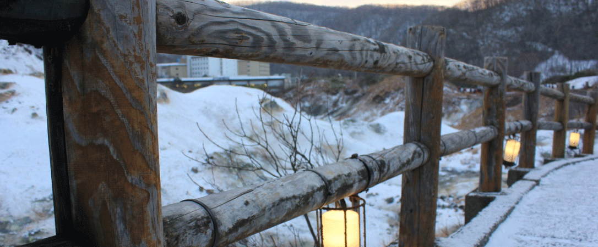
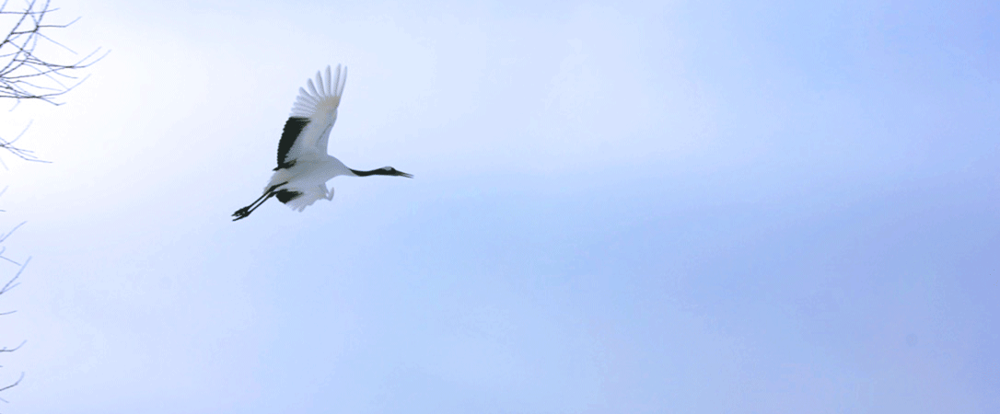
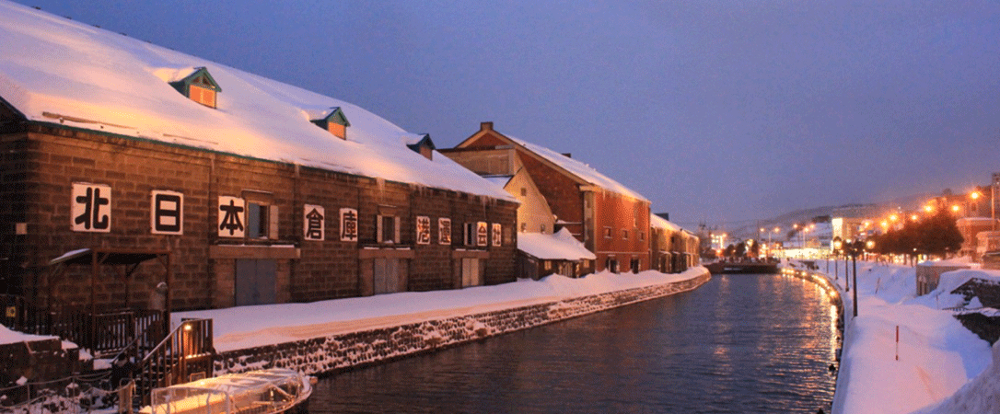

登別の地獄谷
Nobboritsu`s Travel
釧路の鶴
Nobboritsu`s Travel
小樽の運河
Nobboritsu`s Travel
以下の地図での好きな所の名前をクリックしてみてください！
北半球に広く分布するアカギツネの亜種。日本では北海道・樺太および周辺島嶼に生息する。アイヌ語ではチロンヌプ（cironnup）、スマリ（sumari）、キモッペ（kimotpe）、フレプ（hurep）などの名称がある[3]。
北半球に広く分布するアカギツネの亜種。日本では北海道・樺太および周辺島嶼に生息する。アイヌ語ではチロンヌプ（cironnup）、スマリ（sumari）、キモッペ（kimotpe）、フレプ（hurep）などの名称がある[3]。
北半球に広く分布するアカギツネの亜種。日本では北海道・樺太および周辺島嶼に生息する。アイヌ語ではチロンヌプ（cironnup）、スマリ（sumari）、キモッペ（kimotpe）、フレプ（hurep）などの名称がある[3]。